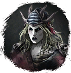
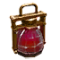
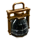
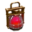

Кости Халигардийца
Предметы / С врагов
Открыть в интерактивной вики →
| Вес | 1 |
|---|---|
| Цена | 50 000 |
Описание
Бедреная кость халигардийского солдата, который погиб в боях с ворлингами. Магический артефакт, служащий для призыва Кости Халигардийца,  Рука Халигардийца,
Рука Халигардийца,  Череп Халигардийца,
Череп Халигардийца,  Останки Халигардийца,
Останки Халигардийца,  Халагар из Беирна поведает вам, как призвать Селена.
Халагар из Беирна поведает вам, как призвать Селена.

Селена. Из дошедших до вас слухов вы делаете вывод, что когда вы добудетеКости Халигардийца, Рука Халигардийца, Череп Халигардийца, Останки Халигардийца, Халагар из Беирна поведает вам, как призвать Селена.| Останки галигардского солдата, павшего в битвах с ворлингами. Магический артефакт для призыва Селены. Из подслушанных слухов ты понимаешь: когда добудешь ещё Руку галигардца, Череп галигардца и Останки галигардца, Халагар из Беирна расскажет, как призвать Селену. |
Рецепт
Создание: 3x  Глиф Подмастерья + 1x
Глиф Подмастерья + 1x  Ученический глиф + 1x
Ученический глиф + 1x  Элементарный глиф + 3x
Элементарный глиф + 3x
Глиф Подмастерья + 1x Ученический глиф + 1x Элементарный глиф + 3x 
Гигантская Фляга Силы + 3x
Гигантская Фляга Уничтожения + 3x
Гигантская Фляга ЗдоровьяГде создать

Дроп


Применение
|
Способы получения
|